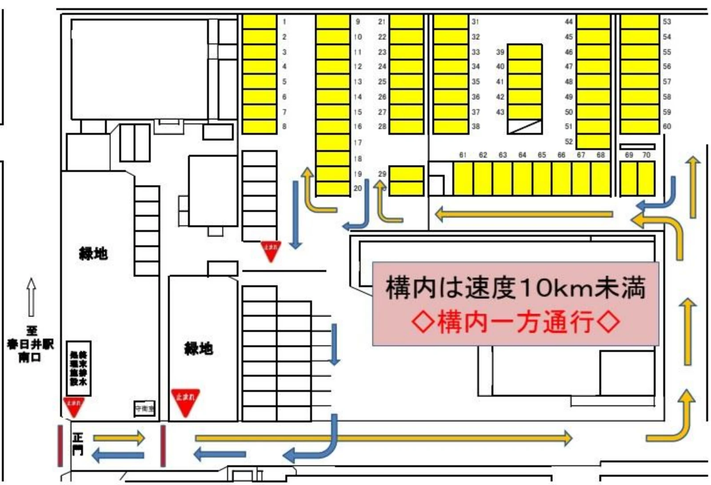
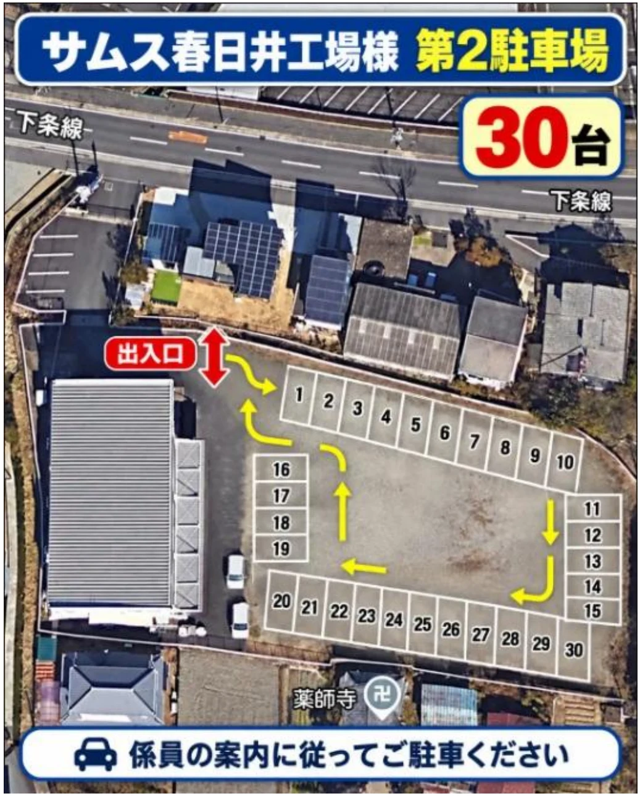
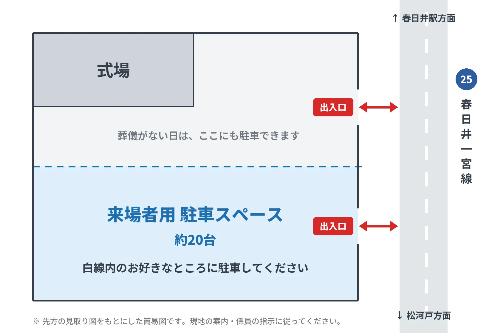
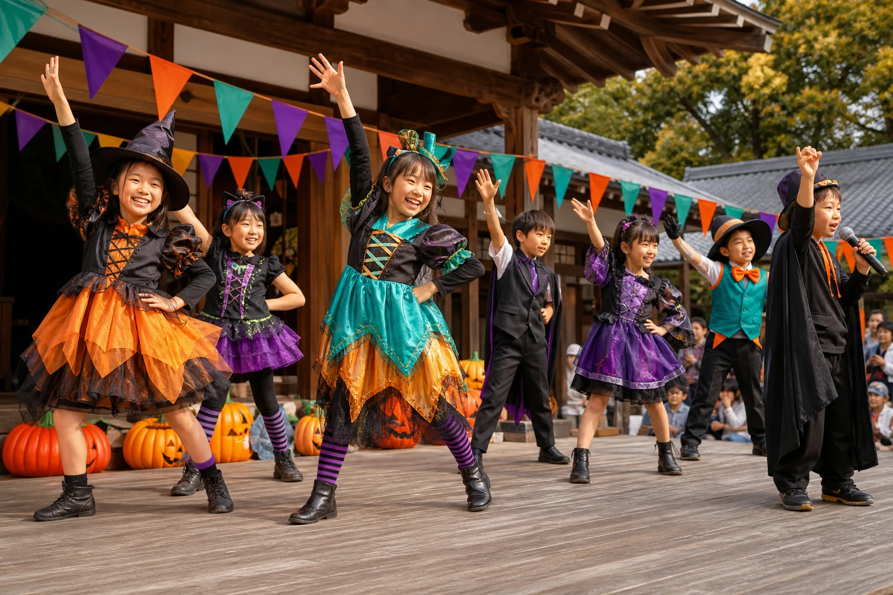

1第1駐車場（①）
日医工株式会社 愛知工場
- 台数
- 70台
- 利用時間
- 9:00〜17:00
- 住所
- 春日井市下条町寺前1212
- 注意
- 構内は一方通行・時速10km未満

構内図（押すと大きく表示） Googleマップで開くPARKING
お車でお越しの方は、近くの企業さまにお借りしている臨時駐車場（①〜④）をご利用ください。台数に限りがありますので、乗り合わせや公共交通機関のご利用にご協力ください。
駐車場案内図をPDFで見る ①日医工・②サムス・③田中葬具・④王子製紙（押すと大きく表示）
①日医工・②サムス・③田中葬具・④王子製紙（押すと大きく表示）
1第1駐車場（①）

構内図（押すと大きく表示） Googleマップで開く2第2駐車場（②）

構内図（押すと大きく表示） Googleマップで開く3第3駐車場（③）

配置図（押すと大きく表示） Googleマップで開く4第4駐車場（④）
自自転車
駐輪場は会場の入口近くにあります（場所はガードマンにご確認ください）。境内への乗り入れはできません。
ABOUT THE FESTIVAL
「食」を通じて命の大切さを知り、体験を通じてまちの人と出会う。
子どもも大人も、笑顔でつながる一日。おいしいもの、手を動かす体験、ステージの音、そして仮装。お寺の境内いっぱいに、春日井の「楽しい」が集まります。
WHAT'S WAITING?
気になる体験を見つけてみよう。
キッチンカー、米粉クッキー、ベビーカステラなど。地域のおいしいものと出会おう。
FOOD MARCHEハンドメイドや地域のお店が集まる新しい出会いのマーケット。誰かの「好き」とつながる場所。
COMMUNITY MARKETダンスや音楽など、地域のみなさんによるパフォーマンスで盛り上がろう。
LIVE STAGE食や農業、地域のことを楽しく学べる体験企画。つくって、体験しながら学ぼう。
FOOD WORKSHOP看護師・歯科衛生士のお話。「いただきます」の意味や食と健康を知ろう。
MINI TALKとびきりの仮装で遊びに来てね。仮装ランウェイ、カラオケ大会があります。
HALLOWEEN FUN※出店・体験内容は変更になる場合があります。
つくる体験から、「いただきます」の向こう側を見つけよう。
地域のお店や人との出会いも、お祭りの大切な体験です。

ダンス、合唱、パフォーマンス。ステージから元気を届けよう。
会場の泰岳寺のこと、会場までの行き方、ステージに出る人の紹介などを投稿しています。
場所泰岳寺ってどんなお寺？
Instagramで投稿を見る
道案内バス停「泰岳寺東」から会場まで
Instagramで投稿を見る
イベント出演者紹介 山口大貴さん
Instagramで投稿を見る
イベント出演者紹介 春日丘高校インターアクトクラブ
Instagramで投稿を見る
BEFORE YOU COME
普段着でも大歓迎です。仮装する場合は、歩きやすく視界を妨げない服装でお越しください。
入場は無料です。体験企画ごとの予約・参加費は準備中です。決まり次第、このページでご案内します。
雨天決行です。荒天など安全な開催が難しい場合は、中止・内容の変更をすることがあります。中止・変更のお知らせは、Instagram（@kasugai.fes）とこのページでお伝えします。
近くの企業さまにお借りしている臨時駐車場（第1〜第4）をご利用ください。場所と利用時間は「駐車場のご案内」をご覧ください。台数に限りがありますので、乗り合わせにご協力ください。自転車は入口近くの駐輪場をご利用ください（場所はガードマンにご確認ください）。
SEE YOU AT THE FESTIVAL
10月31日、泰岳寺でお待ちしています。